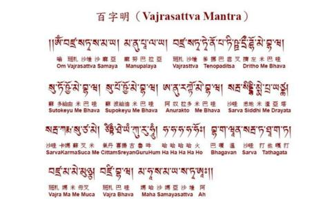

“金刚萨埵”，亦作“金刚萨垛”。金刚萨埵
嗡wēng班bān札zhá拉lā萨sà埵duǒ萨sà玛mǎ呀yā
玛mǎ奴nú巴bā拉lā呀yā
班bān杂zá拉lā萨sà埵duǒ喋dié诺nuò巴bā
地dì叉chā则zé桌zhuō美měi巴bā哇wā
速sù埵duǒ卡kǎ唷yōu美měi巴bā哇wā
速sù波bō卡kǎ唷yōu美měi巴bā哇wā
阿ā奴nú拉lā多duō美měi巴bā哇wā
萨sà尔ěr哇wā悉xī地dì美měi札zhá呀yā哇wā
萨sà尔ěr哇wā嘎gā尔ěr玛mǎ速sù杂zá美měi也yě
积jī当dāng希xī里lǐ呀yā咕gū如rú吽hōng
哈hā哈hā哈hā哈hā霍huò巴bā嘎gā问wè
萨sà尔ěr哇wā达dá他tā嘎gā达dá班bān杂zá
玛mǎ美měi面miàn杂zá班bān札zhá巴bā哇wā玛mǎ哈hā
萨sà玛mǎ呀yā萨sà埵duǒ
金刚萨埵百字明咒 ，是尊指第六金刚持的咒。
金刚萨埵为一切众生菩提心的本体，其性坚固如金刚故名「金刚」，亦名金刚心
《百字明》为用于消除罪障、忏悔、补阙的
［注解］呼其名及洒嘛雅。此处洒嘛雅意为誓句、大愿及戒律。无论何时一尊名被呼，则其高尚的品格即与之完全相连而蒙召感；无论何时任何人祈请及本尊的洒嘛雅，其誓言即化为行动，而其大愿则
［注解］请让我不要忘记我纯真的自性，或者，由于你的誓句，请保持我于纯真的自性，即空性之中。这是有关于观空的。当一个人住于空性时，他是被本尊所保持的，他与本尊同体。他永不为本尊所遗忘。他与本尊合一。
［注解］请赐我成就金刚萨埵。此处金刚萨埵指金刚总持，他是五方佛的上师。这是一种菩提心，在修任何一法之前必先发起的。为救所有众生，必先成佛方能从事所有神圣的救度事业。又据说《百字明》可用以补足任何仪轨之任何欠缺。
［注解］请坚定我的空性。这显然地指出应坚定地住于空性，所有观想有如层层楼房筑基于空性之磐石上。
［注解］请赐我瑜伽之受用。此与三灌之金刚爱有关，亦即红观音之密修。然而白观音之空悲双运亦属一种瑜伽之受用。
［注解］请赐我不违背空性，就是说，纵在大乐中仍能配合空性。米拉日巴尊者对金刚爱之秘密教授强调：“大乐生起时要享受空性，空性生起时要享受大乐！”此处虽然我们只谈到观想，我们在观想由空性缘起之事物时，应保持空性，并且在想到空性时，保持观想。至于空悲不二，我得更加仔细解释，因为它的极端重要性影响所有过去诸佛之证果，并为所有古德所强调者。
凡夫之圆觉乃为罪所障。事实上每一个人违背空性时多多少少有罪。罪因即是不能保持空性而放弃之；犯下以自我为中心的无明烦恼而造损人之恶业。了知违背空性之危险，一个人就永不会造罪。当一个人住于空性时，彼即无自我，又何必要去造罪？当一个人的自我消失时亦无有他人，更有何人可被损害？此亦为大悲之根源。由众生共有之空性本体而在个人心中唤醒同体大悲。谁会以己手自伤其腿？此亦为
有云：修空圆满时得证大悲，修悲圆满时可证空性，空性之中“
［注解］愿我不失乐之本体。此乐之本体即空性；乐本身是一种空性缘起。第六句所说，一个人不应违背空性，是指空性之本体，而此第七句则是关于空性的缘起。如米拉日巴尊者所教授者，此二者必须
［注解］请赐我圆满成就。这是综合所有救度事业而言，除证空性之外，所有其他均直接或间接与大悲有关。整个修持与每一众生有关且为彼等回向。我为众生而
［注解］请赐我所有善行之
［注解］请赐我金刚心之大勇。此亦即请求最重要的菩提心；此心含有大勇，使修法和日常生活中皆能实行大悲。一个人为何胆怯？当作善事时，他使“我不敢”耽误了“我愿”，因为他鄙俗吗？因为他有自我和自私。他有以自我为中心的欲望，所以他怕失去他所欲求的。他已隔离空性。当他住于空性中时，
［注解］请引导我得五智及其切用。梵文“哈”字有任何事情之因皆不可得之意。这五个哈字（最后火字亦为哈字为字根）代表空性之五智。
［注解］所有诸佛菩萨请勿舍我于汝等之大事业外。此特定句意含忏悔与赎罪之功用。有云，如要忏悔还净，应诵《百字明》咒。但此咒全体并不足为忏悔与赎罪，如以上所说明者。此句包含大危险，但此含意少有人知。因此必须指出，我们沦于人道或其他众生道是由于离开神圣的诸佛菩萨之大事业而开始。不断的轮回不会停止，直到我们再回到诸佛菩萨的大事业，我们就罪业得消，本性回复，与空性合一，并且大悲得以滋长。
［注解］或离汝等之金刚自性。此处金刚自性即指空性。凡人极易背空性，再者人在行善时或有偏执，亦是违背金刚自性。
［注解］令我住于广大空性之甚深三摩地。通常仪轨于归空之后，要行者修大手印定。此种空乃是一种直接与法身光明合一之甚深三摩地。因此，在观想中所放诸光，或在观空中法身之根本常寂光，皆与此咒有关。
［注解］请赐我证空性“阿”，佑我得大悲之利用“吽”及降魔“呸”。此最后三字有上述之三种功用。所以在修空性三摩地时，此咒可止于头一个字“阿”。有时为救度他人，则可止于第二个字“吽”。如欲降魔，则高声诵第三个字“呸”，以诛魔或退魔。
持诵《百字明》以作为四加行之一时，则以第一字“阿”结尾，因为“阿”为空性种子，可净除一切罪。
百字明咒的功德 《普贤上师言教》：“念诵一百零八遍百字明，则往昔所造的一切罪障及失戒必定全部得以清净。”这是上师金刚萨埵亲口允诺的。《无垢忏悔续》中也说：“百字明是一切善逝的智慧精华，能够净除所有的失戒与分别念的罪障，称为一切忏悔之王。若一次性念诵一百零八遍，则可酬补一切所失之戒，将从三恶趣中获得
或住大智印，或持数珠，无限念诵，勿令疲顿。由住三摩地，诵此真言故，现世证得无量三摩地；亦能成本尊之身，一切如来现前；证得五
金刚萨埵三摩地，名为一切诸
此法能成诸佛道，若离此更无有佛……
金刚萨埵五密即为如来部，是即金刚部，是即莲华部，是即宝部。五身同一大莲华者，为大悲解脱义。同一月轮圆光者，为大智义。是故菩萨由大智故，不染
百字明的功德主要是消减罪障，就像洗澡可以洗净身体， 百字明咒则可洗净我们的罪障，让我们得到更纯净的力量。
「百字明咒」具足了无边的力量，但念诵的人若没有
我们在今生所积聚的业障，对禅修的经验有很大的阻碍。违犯三愿（小乘愿、大乘愿和金刚乘愿）尤能产生阻挠；干犯你的上师的身、口、意又更过之。违反其它真言乘的神圣誓言，及以佛像交换金钱或食物等恶业，会障蔽先前的禅修经验和妨碍新生的禅修经验。
金刚萨埵百字明是所有医治门中最值得赞美的，因为它能清除所有此类恶业。阿底峡尊者说：『正如刚刚洗净的曼达盘，若放在灰尘很多的地方，就会立即又蒙上尘土；同样地，许多对真言乘誓约的轻犯，会经常突然发生。』如果你因此失望而问：『菩提道成为我的一部分的那一时刻永远不会到来吗？』答案是：真言乘使用多种善巧方便。虽然你犯了不少违背真言乘的轻罪，可是只要你在一
密教的新旧经典中一致宣称，念金刚萨埵本咒有无量立即和究竟的利益。一本印度作品把这一点总括起来说：虽然它们象征五种胜智，被称为陀罗尼、真言、手印、佛塔和曼达的修持，所能积聚的功德不如念一遍百字明。无论是谁诵此百字明，他所积之功德据说相等于庄严所有
无论是谁诵此百字明，
都不会受到疾病、
无论是谁诵此百字明，
都不会为贫穷及灾祸所困。
他的敌人会被打倒，
他的一切愿望都会得到满足。
无论是谁诵此百字明，
都会求子得子，
要财有财。
如缺土地，即获土地。
凡是想要长寿的人，
都应诵此百字明。
当他以为
将会发现寿命又增添三百年！
这一个在此世间快乐的人，
未来将往生
无论是谁诵此百字明，
都不会遭受食肉空行母、恶魔、僵尸，
和妄魔的侵袭。
如作恶的人诵此百字明，
他们也会见到佛。
只要诵此百字明，
愚人能获智，
不幸的人会走运。
无常与挫折将被消灭，
穷凶极恶的人会被净化。
无论今生来世，
他都将是轮王，
最后安住解脱，
而登佛位。
据说，只要你努力修此观想和诵此咒，你那轻微的和普通的恶业即可完全涤清。你的重大恶业不会增加，而会受到抑制，并被逐渐除净。一般说来，你若真正相信业果的道理，你就一定会懊悔你所造的恶业。这样，你的忏悔将是诚实的。
以上所说，似乎都暗示证悟之前必先涤罪。但是，我们之中的那些只是口头念祈祷文，假装修